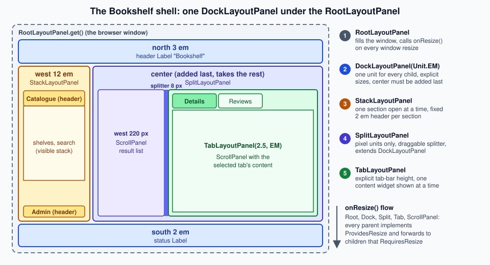

Panels & Layout
|
This content was generated with the assistance of AI and should be verified against the official documentation before being relied on in production. |
This page is written against GWT 2.13.1 (released 2026-06-19), gwt-maven-plugin 1.3.0 (net.ltgt.gwt.maven), JDK 21 running the compiler with -sourceLevel 17, and the Jakarta Servlet 6 server of the Bookshelf scenario, checked on 2026-10-08.
Panels are client code: they are Java classes of gwt-user that the compiler translates to JavaScript together with your own code, they create and arrange DOM elements in the browser, and nothing on this page runs on the server or needs a build setting beyond inheriting com.google.gwt.user.User (the layout classes come with it).
Every behaviour in the tables and every message in the pitfalls table was observed by compiling probe modules with the 2.13.1 compiler (with and without -checkAssertions), loading them in headless Chrome and printing the sizes, the DOM and the exceptions; all Java snippets on this page were compiled and run the same way, and the numbers quoted come from a 1024 by 768 window.
A panel is the part of the user interface that decides where other widgets go.
A widget such as a Label or a Button does one thing, and panels give a set of widgets their structure: stacked, side by side, in a grid, behind tabs, in a draggable split, or floating above the page.
GWT has two generations of panels, and most of this page is about telling them apart: the panels from before GWT 2.0 (HorizontalPanel, VerticalPanel, DockPanel, StackPanel, TabPanel, HorizontalSplitPanel) are built from HTML tables and from the browser’s flow layout, and the layout panels introduced in GWT 2.0 (RootLayoutPanel, LayoutPanel, DockLayoutPanel, SplitLayoutPanel, StackLayoutPanel, TabLayoutPanel, DeckLayoutPanel) are built from absolutely positioned elements and a small constraint system, which is what makes application-style layouts predictable.
The sections below follow the Developer Guide page on panels (basic panels, layout panels, animation, RequiresResize and ProvidesResize, standards mode, the design of the layout system and its recipes) and add the details that the page leaves out: what the DOM looks like, which exceptions you get, what changes between development and production, and how to write a panel of your own.
What a panel is
A panel has two faces, exactly like the widgets it holds.
As a Java object it is a Widget that implements HasWidgets (add, remove, clear, iterate over children), usually also IndexedPanel (children are numbered), and it is the parent of its children for the purposes of attach and detach events.
As a DOM structure it owns one root element and puts its children’s elements inside it, either directly or wrapped in helper elements.
The root of the tree is RootPanel, which wraps the <body> element of the host page (or any other element, through RootPanel.get(String id)), so a widget becomes visible only when it has a chain of parents that ends there.
Three details in that diagram matter in practice.
TabLayoutPanel, StackLayoutPanel and DisclosurePanel are Composite subclasses, not Panel subclasses: they implement HasWidgets and (for the first two) IndexedPanel, so they behave like panels, but they wrap a private panel and you cannot use them where a Panel is required.
Grid and FlexTable are panels too (HTMLTable extends Panel), because a cell can hold any widget.
And DockPanel, StackPanel, TabPanel and DeckPanel are not deprecated in 2.13.1: their Javadoc only points to the layout panel that replaces them (@see DockLayoutPanel, @see StackLayoutPanel, @see TabLayoutPanel), while HorizontalSplitPanel, VerticalSplitPanel and SplitPanel are @Deprecated in favour of SplitLayoutPanel.
The panel contract: HasWidgets, IndexedPanel and InsertPanel
The interfaces split what a panel can do.
| Interface | Methods | Implemented by |
|---|---|---|
|
|
every |
|
|
|
|
|
|
|
tag interface, and |
the layout panels, |
The two everyday panels show the shape of the API.
void flow() {
FlowPanel shelf = new FlowPanel(); // one div; children flow as in HTML
shelf.add(new Label("Dune"));
shelf.add(new Label("Emma"));
shelf.insert(new Label("Ulysses"), 0); // InsertPanel: add at an index
RootPanel.get().add(shelf); // RootPanel.get() wraps the body element
RootPanel sidebar = RootPanel.get("sidebar"); // null when the page has no such id
if (sidebar != null) {
sidebar.add(new Label("Filters"));
}
}Source: GWT — Panels: Basic Panels
RootPanel.get("sidebar") returns null when the host page has no element with that id (the probe printed null, there is no exception), so a missing id turns into a NullPointerException at the first use unless you test for it.
The base Panel.add(Widget) throws UnsupportedOperationException with the message This panel does not support no-arg add(), and the panels whose children need extra information have their own overloads instead: StackLayoutPanel.add(Widget) fails an assertion (Single-argument add() is not supported for this widget), TabLayoutPanel.add(Widget) adds a tab with an empty title, and DockLayoutPanel.add(Widget) adds the center.
Because ComplexPanel and the interfaces above are common to most panels, code that only needs to walk the children can take an IndexedPanel or a HasWidgets.
void indexed(ComplexPanel panel) {
for (int i = 0; i < panel.getWidgetCount(); i++) { // IndexedPanel
Widget w = panel.getWidget(i);
if (panel.getWidgetIndex(w) != i) {
throw new IllegalStateException();
}
}
for (Widget w : panel) { // HasWidgets is Iterable
log(w);
}
panel.remove(0); // IndexedPanel.remove(int)
panel.clear(); // HasWidgets.clear()
}Source: Javadoc — ComplexPanel
Attach, detach and the parent chain
A widget is attached when it is a descendant of RootPanel (or of a panel that was attached through RootPanel), and onLoad() runs when it becomes attached, onUnload() when it stops being.
Adding a child to a panel does not attach it if the panel itself is still detached: the child gets a parent but no onLoad() yet.
The probe printed this order for a custom panel (the text in square brackets marks the steps of the test): [added to detached panel] onLoad [panel attached], and on removal onUnload, after which getParent() was null.
Every panel therefore does two things beyond moving elements: it makes itself the parent of the child (adopt) and it forwards attach and detach to its children (doAttachChildren, doDetachChildren).
That is why the writing of a new panel (a later section) is a short list of steps, and why a child can have at most one parent: adding a widget to a second panel first removes it from the first.
Which panel for which job
The first decision is whether the panel defines the application’s skeleton or part of a page that reads like a document.
The same advice as a table, including what to avoid.
| You want | Use | Instead of |
|---|---|---|
a window-filling application frame with header, navigation, content and status bar |
|
|
tabs that stay in the layout and fill the space below the tab bar |
|
|
expandable sections stacked vertically |
|
|
two areas separated by a draggable splitter |
|
|
a toolbar, form fields or a list of widgets that flow like HTML |
|
|
a text block with widgets embedded at marked places |
|
building the text from several labels |
a table of headings and values |
|
nested `HorizontalPanel`s |
a large, paged, sortable table |
the cell widgets of the Cell Widgets page ( |
thousands of |
widgets at exact pixel positions |
|
manual |
Basic panels
The basic panels are the ones that exist in any HTML page: a block, a table, a scrolling box, a form, an overlay.
They work in standards mode and in quirks mode, they let the browser lay out their children, and the ones that need a size (ScrollPanel) take it from CSS or from setSize.
The table shows what each one produces; the DOM column was printed by the probe (getString() of the element, with the style attribute abbreviated).
| Panel | Root element and children |
|---|---|
|
|
|
|
|
|
|
|
|
|
|
the same |
|
the same kind of |
|
|
|
|
|
|
|
|
|
|
|
|
|
|
Source: GWT — Panels: Basic Panels
The role="presentation" attribute on the table-based panels (and on the layout table inside a DialogBox) is new in 2.13.0: the release notes say that an ARIA presentation role was added for layout tables, which tells assistive technology that these tables arrange widgets and are not data tables.
Use Grid or FlexTable for data, and give them a header row and a caption of your own, since the library does not mark them as data tables.
RootPanel, FlowPanel and HTMLPanel
RootPanel is the only panel you never create: RootPanel.get() is the body, RootPanel.get(id) an element of the host page that you chose to hand to GWT, which is how a GWT widget is embedded in a server-rendered page (the page can contain several such islands, each with its own id).
A FlowPanel is the simplest container, a <div> whose children keep their natural flow; FlowPanel(String tag) builds another element type such as ul, in which case the children should be elements valid inside it.
An HTMLPanel starts from HTML and lets widgets take places in it, which is the panel UiBinder uses whenever a template mixes markup and widgets.
interface CardTemplate extends SafeHtmlTemplates {
// {0} is escaped as text, {1} as an attribute value: no runtime string reaches the HTML unescaped
@Template("<h3>{0}</h3><div id=\"{1}\"></div>")
SafeHtml card(String title, String slotId);
}
private static final CardTemplate TEMPLATE = GWT.create(CardTemplate.class);
HTMLPanel card(String title) {
String slot = HTMLPanel.createUniqueId();
HTMLPanel card = new HTMLPanel(TEMPLATE.card(title, slot));
card.add(new Button("Borrow"), slot); // widget goes inside the element with that id
return card;
}Source: Javadoc — HTMLPanel, GWT — SafeHtml
The title and the generated id go through a SafeHtmlTemplates method, which escapes each argument for its position, so a title such as Dune <b> is shown as text and does not become markup.
The constructor with a String argument is annotated @IsSafeHtml, which tells static analysis that the value must be a constant, and the rule of this page is the same: build the HTML from constants and escape every value that comes from a user, a server or a database.
add(widget, id) puts a widget inside the element with that id, addAndReplaceElement(widget, id) replaces the element with the widget; a missing id throws java.util.NoSuchElementException whose message is the id itself (the probe printed java.util.NoSuchElementException: nope).
Put the placeholder in a div or span and not inside an element that cannot contain a block widget, because the browser, not GWT, decides what a p may hold.
SimplePanel, ScrollPanel and FocusPanel
SimplePanel holds exactly one widget, and a second add is an error: java.lang.IllegalStateException: SimplePanel can only contain one child widget.
Use setWidget to replace the child, which detaches the old one.
ScrollPanel, FocusPanel, FormPanel, PopupPanel, SimpleLayoutPanel and ResizeLayoutPanel are all `SimplePanel`s that add one behaviour.
ScrollPanel shows scroll bars when its child is larger than the panel, so it needs a size that does not come from its content: give it one with setSize, with CSS, or by placing it in a layout panel, which is exactly what the Developer Guide recommends.
It implements RequiresResize and ProvidesResize, so it also tells a layout-aware child (for example a cell widget) when it was resized.
FocusPanel makes any widget focusable and clickable by wrapping it in a focusable <div>; it is the panel that offers all the mouse, key, touch, drag and focus handlers (addClickHandler, addKeyDownHandler, addMouseOverHandler and the rest) that a plain panel does not have.
ScrollPanel scrolling(Widget list, Widget lastRow) {
ScrollPanel scroller = new ScrollPanel(list);
scroller.setAlwaysShowScrollBars(false);
scroller.setSize("100%", "100%"); // a ScrollPanel needs a size to scroll
scroller.ensureVisible(lastRow); // scroll the row into view
scroller.scrollToBottom();
scroller.addScrollHandler(e -> log(scroller.getVerticalScrollPosition()));
return scroller;
}
FocusPanel clickable(Runnable open) {
FocusPanel hit = new FocusPanel(new Label("Open details"));
hit.setTabIndex(0); // reachable with the keyboard
hit.addClickHandler(e -> open.run());
hit.addKeyDownHandler(e -> {
if (e.getNativeKeyCode() == com.google.gwt.event.dom.client.KeyCodes.KEY_ENTER) {
open.run();
}
});
return hit;
}The key handler is not decoration: a <div> that reacts to clicks must also react to the keyboard, or users who do not use a mouse cannot operate it.
For real buttons and links use the widgets of the Widgets page (Button, Anchor), which are focusable and operable by default.
FormPanel
FormPanel wraps its one child in an HTML <form>, which is the way to send multipart/form-data (file uploads), to get the browser’s default form keyboard behaviour, or to post to a server that expects a form.
Because it is a SimplePanel, put a FlowPanel or another container inside it for the fields.
submit() sends the form to the hidden frame the panel creates, addSubmitHandler runs before the submission and can cancel() it, and addSubmitCompleteHandler receives the response text (getResults()) when the frame has loaded.
FormPanel coverUpload(String xsrfToken, Label status) {
final FormPanel form = new FormPanel();
form.setMethod(FormPanel.METHOD_POST);
form.setEncoding(FormPanel.ENCODING_MULTIPART);
form.setAction("/bookshelf/covers");
FlowPanel body = new FlowPanel(); // FormPanel holds exactly one widget
final FileUpload file = new FileUpload();
file.setName("cover");
body.add(file);
body.add(new Hidden("xsrf", xsrfToken)); // state-changing: send the XSRF token too
body.add(new Button("Upload", (com.google.gwt.event.dom.client.ClickHandler) e -> form.submit()));
form.setWidget(body);
form.addSubmitHandler(e -> {
if (file.getFilename().isEmpty()) {
e.cancel(); // nothing chosen: do not submit
}
});
form.addSubmitCompleteHandler(e -> status.setText("Uploaded"));
return form;
}Source: Javadoc — FormPanel
A form post that changes state needs the same protection as an RPC call: include the XSRF token as a field (as above) and check it on the server (the XSRF, RPC & Server Security page explains the token flow), and validate the uploaded file’s type and size on the server, never in the browser alone.
Grid and FlexTable
HTMLTable is the common base: setText, setHTML, setWidget, getText, getWidget, clearCell, the formatters and the cell-click support (getCellForEvent(ClickEvent)).
Grid has a fixed number of rows and columns (change it with resize, resizeRows, resizeColumns, insertRow, removeRow), while FlexTable creates rows and cells when you touch them and lets cells span.
The three formatters hold the presentation: getCellFormatter() (alignment, style names, width, height, setWordWrap), getRowFormatter() (style names and visibility per row) and getColumnFormatter() (width and style per column); getFlexCellFormatter() adds setColSpan and setRowSpan.
Grid prices() {
Grid grid = new Grid(3, 3); // fixed size: setText(5, 0, ...) throws
grid.setText(0, 0, "Title");
grid.setText(0, 1, "Author");
grid.setText(0, 2, "Year");
grid.getRowFormatter().addStyleName(0, "head");
grid.getCellFormatter().setHorizontalAlignment(0, 2, HasHorizontalAlignment.ALIGN_RIGHT);
grid.getColumnFormatter().setWidth(0, "50%");
grid.setCellPadding(4);
return grid;
}
FlexTable summary() {
FlexTable table = new FlexTable(); // grows on demand
table.setText(0, 0, "Dune");
table.getFlexCellFormatter().setColSpan(0, 0, 2);
table.setText(1, 0, "Frank Herbert");
table.setText(1, 1, "1965");
table.removeRow(0);
return table;
}Source: Javadoc — HTMLTable, Javadoc — FlexTable
The probe printed the result of the formatters as plain markup, which is why the table-based panels are easy to style with CSS selectors on the head class and on the col elements:
<table cellpadding="4"><colgroup><col width="50%"><col><col></colgroup><tbody>
<tr class="head"><td>Title</td><td>Author</td><td align="right">Year</td></tr>
<tr><td> </td><td> </td><td> </td></tr>
</tbody></table>On a FlexTable with one cell in row 0 and a cell at (2, 3), the cell counts of the three rows were 1, 0 and 4: GWT creates the missing cells of the touched row but leaves row 1 empty, which is the reason to prefer Grid when every row has the same shape.
Grid throws IndexOutOfBoundsException for an index outside its size and FlexTable for a negative one, with the messages in the pitfalls table.
Two sizing facts follow from tables being tables: a Grid placed in the center of a DockLayoutPanel kept its natural 34 by 24 pixels in the probe, and it fills the 300 by 200 pixel area only after setSize("100%", "100%"), because the layout panels size their child’s container, and a table does not stretch to fill its container by itself.
AbsolutePanel and the table-based panels
AbsolutePanel positions each child at a left and top in pixels (add(widget, left, top), setWidgetPosition, getWidgetLeft, getWidgetTop) and is the panel for drag and drop surfaces and overlays; give it an explicit size.
The CellPanel family (HorizontalPanel, VerticalPanel, DockPanel) puts every child in a table cell, so the cell, not the child, carries the alignment and size: setHorizontalAlignment, setVerticalAlignment, setSpacing, setCellWidth(widget, "100%") and setCellHeight apply to the <td>.
DeckPanel shows one child (showWidget(index), getVisibleWidget(), and -1 until something is shown), and StackPanel and TabPanel are the table-based stack and tab panels with a header string per child (TabPanel is a tab bar above a DeckPanel and reports selections through addSelectionHandler).
They still work, and these are the classes most older code and the book use, so you will meet them, but new application frames should use the layout panels below.
void legacy() {
AbsolutePanel board = new AbsolutePanel();
board.setSize("300px", "200px"); // needs an explicit size
Label sticker = new Label("Dune");
board.add(sticker, 10, 20); // left and top, in pixels
board.setWidgetPosition(sticker, 40, 50);
HorizontalPanel bar = new HorizontalPanel(); // one table row
bar.setSpacing(4);
bar.setVerticalAlignment(HasVerticalAlignment.ALIGN_MIDDLE);
TextBox search = new TextBox();
bar.add(new Label("Title"));
bar.add(search);
bar.setCellWidth(search, "100%"); // the td gets the width, not the child
VerticalPanel column = new VerticalPanel(); // one table row per child
column.setHorizontalAlignment(HasHorizontalAlignment.ALIGN_CENTER);
column.add(new Label("one"));
DockPanel oldDock = new DockPanel();
oldDock.add(new Label("header"), DockPanel.NORTH);
oldDock.add(new Label("body"), DockPanel.CENTER);
DeckPanel deck = new DeckPanel();
deck.add(new Label("a"));
deck.add(new Label("b"));
deck.showWidget(0); // getVisibleWidget() is -1 until now
StackPanel stack = new StackPanel();
stack.add(new Label("Shelves"), "Catalogue");
TabPanel tabs = new TabPanel();
tabs.add(new Label("body"), "Details");
tabs.selectTab(0);
}A few more panels in the same package are worth knowing by name.
| Class | Purpose |
|---|---|
|
wraps one widget in a border with a caption in the upper left corner; the HTML |
|
the same panels wrapped in a nine-box of styled cells for rounded corners and borders; the Javadoc of |
|
does not build its content until |
|
described with the layout panels below |
DisclosurePanel
A DisclosurePanel has a header that the user clicks to show or hide one content widget: new DisclosurePanel("Reviews") builds a text header with the default arrow image, new DisclosurePanel(Widget header) a custom header, and setContent sets the body.
It fires OpenEvent and CloseEvent (the classic DisclosureHandler and addEventHandler are deprecated), which makes it the right place to load the content lazily.
A third add throws IllegalStateException: A DisclosurePanel can only contain two Widgets.: the message counts the header and the content.
DisclosurePanel reviews(Runnable load) {
DisclosurePanel more = new DisclosurePanel("Reviews");
more.setContent(new Label("No reviews yet"));
more.setAnimationEnabled(true);
more.addOpenHandler(e -> load.run()); // fetch lazily on first open
more.addCloseHandler(e -> log(e.getTarget()));
return more;
}Source: Javadoc — DisclosurePanel
The style names are gwt-DisclosurePanel plus gwt-DisclosurePanel-open or gwt-DisclosurePanel-closed, and the header and content carry header and content class names.
PopupPanel and DialogBox
A PopupPanel floats over the page; it is the one panel that you do not add to another panel, you show() it and hide() it, and GWT attaches it to RootPanel itself.
Its size comes from its content (setting the width or height forwards to the child), setPopupPosition(left, top) places it, setPopupPositionAndShow(PositionCallback) is called with the popup’s measured size so that you can place it before it appears, center() shows it in the middle of the window, and showRelativeTo(UIObject) puts it below another element, with its left edges aligned, and moves it above or aligns the right edges when it would not fit.
Three flags decide how it closes: auto-hide (a click outside closes it; a PopupPanel(boolean autoHide) also closes on a history change), modal (events outside the popup and its children are ignored, new PopupPanel(autoHide, modal)), and setGlassEnabled(true), which adds a "glass" element (default style gwt-PopupPanelGlass) that greys out the page.
Animation is off by default (setAnimationEnabled(true) turns it on, with AnimationType.CENTER, ONE_WAY_CORNER or ROLL_DOWN).
A DialogBox is a decorated popup with a caption (setText escapes the text, setHTML takes SafeHtml) and a draggable caption bar; new DialogBox(false, true) is the usual modal dialog.
void popups(Widget anchor, Widget form) {
final PopupPanel tip = new PopupPanel(true); // autoHide: a click outside closes it
tip.setWidget(new Label("Borrowed until 2026-11-01"));
tip.showRelativeTo(anchor); // below the anchor, flipped if it does not fit
final PopupPanel menu = new PopupPanel(true);
menu.setWidget(new Label("Edit Delete"));
menu.setPopupPositionAndShow((width, height) -> menu.setPopupPosition(40, 80));
DialogBox box = new DialogBox(false, true); // not autoHide, but modal
box.setText("Edit book"); // caption text, escaped
box.setGlassEnabled(true); // dims the page behind it
box.setAnimationEnabled(true);
box.setWidget(form);
box.addCloseHandler(e -> log(e.isAutoClosed()));
box.center(); // show and center
}Source: Javadoc — PopupPanel, Javadoc — DialogBox
The DOM of the popup printed by the probe is small, and the dialog is a nine-cell table of styled `<div>`s:
<div class="gwt-PopupPanel" style="..."><div class="popupContent"><div class="gwt-Label">tip</div></div></div>
<div class="gwt-DialogBox" style="..."><div class=""><table role="presentation" cellspacing="0" cellpadding="0" class=""><tbody>
<tr class="dialogTop"> ... <td class="dialogTopCenter"><div class="dialogTopCenterInner"><div class="Caption">Edit book</div></div></td> ... </tr>
<tr class="dialogMiddle"> ... <div class="dialogMiddleCenterInner dialogContent"><div class="gwt-Label">form</div></div> ... </tr>
<tr class="dialogBottom"> ... </tr>
</tbody></table></div></div>The dialog carries no role or aria-label attribute in 2.13.1 (the probe read an empty role), so a screen reader does not know it is a dialog.
com.google.gwt.aria.client.Roles adds them: after Roles.getDialogRole().set(box.getElement()) and Roles.getDialogRole().setAriaLabelProperty(box.getElement(), "Edit book") the element had role="dialog" and aria-label="Edit book".
The modal flag stops mouse and keyboard events from reaching the page behind the dialog, but neither PopupPanel nor DialogBox moves keyboard focus into the popup (there is no focus call in either class), so call setFocus(true) on the first field yourself after center().
Layout panels
GWT 2.0 added a family of panels that, according to the Developer Guide, give application-level layout a stable and predictable basis. Their purpose is the outer structure of an application, the parts that are least document-like, and the rest of the page keeps using ordinary widgets and HTML.
The idea: constraints, not tables
Each layout panel owns a container <div> and attaches every child in a layer, a position: absolute element, which a helper class, com.google.gwt.layout.client.Layout, positions with CSS constraints.
CSS lets you combine left, right, width, top, bottom and height: any two per axis form a valid constraint pair (three would be degenerate), so a child can be pinned 1 em from each edge, or be 50 percent wide and stuck to the left, or have a fixed height at the bottom.
The browser’s own layout engine does the work, GWT only writes the constraints, and the panels still behave when the parent resizes, when the child has a border, margin or padding, and when lengths are mixed (em, px, %).
The Developer Guide lists the goals: predictable layout in standards mode, correct behaviour with decorations in arbitrary units, as much as possible done by the browser, and smooth automatic animation; the non-goals are quirks mode, Swing-style preferred-size layout (which the guide considers intractable in the browser) and taking over all layout.
The DOM of the Bookshelf shell shows the result: an invisible ruler <div> that the Layout class uses to measure em and ex, and one absolutely positioned layer per child with the constraints from the Java call.
<div style="position: absolute; overflow: hidden; left: 0em; top: 0em; right: 0em; height: 3em;">
<div class="gwt-Label" style="position: absolute; inset: 0px;">Bookshelf</div>
</div>
<div style="position: absolute; overflow: hidden; left: 0em; right: 0em; bottom: 0em; height: 2em;">
<div class="gwt-Label" style="position: absolute; inset: 0px;">ready</div>
</div>
<div aria-hidden="true" style="position: absolute; z-index: -32767; top: -20ex; width: 10em; height: 10ex; visibility: hidden;"> </div>The first layer is north (left, top, right, height: 3em), the second is south (bottom, height: 2em), and the child inside each layer is stretched over the layer (Chrome prints the pair left: 0; top: 0; right: 0; bottom: 0 as inset: 0px).
The em of a layer is the font size of the container, and that depends on your CSS: with the Clean theme inherited by the module, 3em measured 39 pixels (13 pixels per em), and the same call on a page with no theme measured 48.
| Class | What it does | Notes |
|---|---|---|
|
singleton root that fills the window ( |
calls |
|
each child gets its own constraints ( |
a child with no constraints fills the panel; zero or two constraints per axis |
|
north, south, east, west (and |
one unit ( |
|
a |
pixel units only, splitter size 8 px by default |
|
tab bar plus one visible child, which fills the rest |
tab bar height and unit are constructor arguments; a |
|
a header per child, one child visible |
header height per child; a |
|
all children stacked, one visible |
nothing is visible until |
|
one child, forwards |
the container the |
|
one child, tells it when the panel was resized ( |
use it to embed layout panels inside a non-layout parent |
|
header, content and footer; header and footer take their natural size |
|
Source: GWT — Panels: Layout Panels
RootLayoutPanel and LayoutPanel
RootLayoutPanel.get() is the root of a layout-panel application: it fills the body (it ignores body margins, the layer is positioned from the viewport edges), registers a window resize handler once, and calls onResize() on its children when the window changes.
You normally add one child, the application panel, and let that child divide the space.
void install(Widget shell) {
RootLayoutPanel.get().add(shell); // fills the window, follows resizes
}Source: Javadoc — RootLayoutPanel
LayoutPanel is the general mechanism, the one the other layout panels are built on; the closest classic panel is AbsolutePanel, with arbitrary constraints instead of fixed left and top.
Each of the six setters (setWidgetLeftWidth and its siblings) takes the two constraints for one axis, and for every pair the values and units are independent.
LayoutPanel constraints(Widget left, Widget right, Widget middle) {
LayoutPanel p = new LayoutPanel();
p.add(left); p.add(right); p.add(middle);
p.setWidgetLeftWidth(left, 0, Unit.PCT, 50, Unit.PCT); // left half
p.setWidgetRightWidth(right, 0, Unit.PCT, 50, Unit.PCT); // right half
p.setWidgetLeftRight(middle, 5, Unit.EM, 5, Unit.EM); // 5 em from both sides
p.setWidgetTopBottom(middle, 5, Unit.EM, 5, Unit.EM);
return p;
}
void slideIn(LayoutPanel panel, Widget banner) {
panel.setWidgetTopHeight(banner, 0, Unit.PX, 0, Unit.PX); // start collapsed
panel.forceLayout(); // fix the starting constraints
panel.setWidgetTopHeight(banner, 0, Unit.PX, 2, Unit.EM); // target
panel.animate(500, new AnimationCallback() {
@Override public void onAnimationComplete() { log("done"); }
@Override public void onLayout(Layer layer, double progress) { }
});
}
void hide(LayoutPanel panel, Widget child) {
panel.setWidgetVisible(child, false); // hides the child and its container layer
}Source: GWT — Panels: LayoutPanel
In a 400 by 300 pixel LayoutPanel (13-pixel em) the three children measured 200x300 at the left edge, 200x300 starting at x = 200, and 270x170 starting at (65, 65): the third pair is 5 em from every edge, 400 - 2 * 65 = 270 and 300 - 2 * 65 = 170.
Layout work is batched: the setters only record the constraints, and the panel applies them in one deferred step (forceLayout() applies them immediately), which is why the animation recipe below calls forceLayout() to fix the starting state.
Hiding a child has a trap that the Developer Guide describes.
The panel wraps each child in a container element, and UIObject.setVisible(false) hides the child but not that container, which then still consumes mouse events.
The probe put a child under a point and hit-tested it: the visible child was the element found at the point, after child.setVisible(false) the element found was the child’s layer container (an empty-class div), and after panel.setWidgetVisible(child, false) (the call in the snippet above) the container was gone from under the point too.
setWidgetVisible hides the child and its layer; DockLayoutPanel.setWidgetHidden hides an edge child by collapsing its size to zero and leaves isVisible() true (the probe measured the north child at 40 pixels, then 0, with isVisible() still true).
A layout panel used without RootLayoutPanel or another ProvidesResize ancestor has no size of its own, because its layer is absolutely positioned and contributes no height to its parent: an unsized LayoutPanel in a FlowPanel measured 1004 by 0 pixels (it took the width of the page and no height).
Give it a size (panel.setSize("20em", "10em")) when the parent cannot, and resize it yourself when the parent changes, because no panel can observe an arbitrary element.
The same applies inside a PopupPanel or a DialogBox:
void splitInDialog() {
SplitLayoutPanel split = new SplitLayoutPanel();
split.addWest(new HTML("west"), 128);
split.add(new HTML("center"));
split.setSize("20em", "10em"); // no RootLayoutPanel above: size it yourself
DialogBox dialog = new DialogBox();
dialog.setText("caption");
dialog.add(split);
dialog.show();
}Source: GWT — Panels: Recipes
DockLayoutPanel
DockLayoutPanel is the same idea as the classic DockPanel without tables: children are docked to the north, south, east or west edge in the order you add them, each with an explicit size along its primary axis, and the last child, the center, takes the rest.
All sizes use the one Unit given to the constructor (Unit.EM, Unit.PX, Unit.PCT and so on), the center cannot have a size, and addLineStart and addLineEnd choose the west or east edge by the text direction of the current locale.
The size of an edge child can be changed afterwards with setWidgetSize (not for the center), and getWidgetDirection and getWidgetSize read the layout data back.
DockLayoutPanel dock(Widget nav, Widget content) {
DockLayoutPanel dock = new DockLayoutPanel(Unit.EM); // one unit for every edge child
dock.addNorth(new Label("Bookshelf"), 3);
dock.addSouth(new Label("ready"), 2);
dock.addWest(nav, 12);
dock.add(content); // the center, always added last
return dock;
}Source: GWT — Panels: DockLayoutPanel
The order matters: the first edge child is docked first and gets the full edge, the next one gets what remains.
In the Bookshelf shell the north and south bars span the whole width because they were added first, and the west navigation fills only the height between them.
Add the west child first and it would span the full height with the bars squeezed to its right.
The measured sizes in the shell (13-pixel em, 1024 by 768 window) were 1024x39 (north), 1024x26 (south), 156x703 (west) and 868x703 (center).
SplitLayoutPanel
SplitLayoutPanel is a DockLayoutPanel with a draggable splitter between every pair of children.
It supports only pixels (its constructor passes Unit.PX to the superclass), and the splitter is 8 pixels thick unless you pass another size.
Use it instead of HorizontalSplitPanel and VerticalSplitPanel.
SplitLayoutPanel split(Widget list, Widget details) {
SplitLayoutPanel split = new SplitLayoutPanel(6); // splitter size in pixels (default 8)
split.addWest(list, 220); // pixels only
split.add(details);
split.setWidgetMinSize(list, 120); // cannot be dragged below 120 px
split.setWidgetSnapClosedSize(list, 60); // below 60 px it snaps closed
split.setWidgetToggleDisplayAllowed(list, true); // double-click the splitter toggles
return split;
}Source: Javadoc — SplitLayoutPanel
The minimum size, the snap-closed size (a speed bump: below that size the child closes completely) and the double-click toggle are per child, and they have no effect on the center.
A dock and a split can be nested, which is how an outer header can be sized in em while the inner split uses pixels (the Developer Guide recipe): in the Bookshelf shell the center of the dock is a SplitLayoutPanel, and in the probe a 200-pixel west child measured 200x703, the splitter 8 pixels, and the tabs 660x703 (868 minus 200 minus 8).
setWidgetHidden hides a child and its splitter together.
TabLayoutPanel, StackLayoutPanel and DeckLayoutPanel
TabLayoutPanel shows a row of tabs and one child below it; the constructor takes the height of the tab bar and its unit, which you must give.
It fires BeforeSelectionEvent (which can be cancelled) and SelectionEvent; selectTab(index) fires them and selectTab(index, false) does not.
The first tab added is selected (getSelectedIndex() was 0 right after adding the tabs, with no event), getTabWidget(i) returns the tab’s widget (use add(child, Widget tab) for a custom tab), and setTabText/setTabHTML(int, SafeHtml) change a title (prefer setTabText and SafeHtml for anything that comes from data).
StackLayoutPanel shows one section at a time; each add(child, header, headerSize) gives the header text (or a SafeHtml, or a widget) and its size, showWidget opens a section and fires the selection events (stack selected 1 in the probe), and getVisibleIndex() reads the open one (0 at first).
DeckLayoutPanel is the building block under TabLayoutPanel: all children are stacked, showWidget shows one with an optional slide (setAnimationDuration, setAnimationVertical), and getVisibleWidgetIndex() is -1 until you show something.
TabLayoutPanel tabs(Widget details, Widget reviews) {
TabLayoutPanel tabs = new TabLayoutPanel(2.5, Unit.EM); // tab bar height is required
tabs.add(details, "Details");
tabs.add(reviews, "Reviews");
tabs.addBeforeSelectionHandler((BeforeSelectionEvent<Integer> e) -> {
if (e.getItem() == 1 && !isLoggedIn()) {
e.cancel(); // veto the switch
}
});
tabs.addSelectionHandler((SelectionEvent<Integer> e) -> log(e.getSelectedItem()));
tabs.setAnimationDuration(200); // 0 by default
tabs.selectTab(0, false); // select without firing events
return tabs;
}
boolean isLoggedIn() { return true; }
StackLayoutPanel stack() {
StackLayoutPanel stack = new StackLayoutPanel(Unit.EM);
stack.add(new Label("Shelves"), "Catalogue", 2); // child, header text, header size
stack.add(new Label("Users"), "Admin", 2);
stack.showWidget(1);
return stack;
}
DeckLayoutPanel deck(Widget a, Widget b) {
DeckLayoutPanel deck = new DeckLayoutPanel();
deck.add(a);
deck.add(b);
deck.setAnimationDuration(250);
deck.showWidget(b); // nothing is shown until you ask
return deck;
}The probe, in order: before selection 1, selected 1, then a veto on the third tab (before selection 2 and no selected 2), and a silent selectTab(0, false) left the index at 0.
The default animation duration is 0 for TabLayoutPanel and DeckLayoutPanel and 250 milliseconds for StackLayoutPanel.
Layout panels in UiBinder templates
Every layout panel has a UiBinder form, and the parser enforces the rules of the Java API with compile-time errors.
The elements in lower case (north, layer, tab, stack, header) are not widgets and cannot carry ui:field.
| Element | Children and attributes | Defaults |
|---|---|---|
|
|
|
|
the same child elements; no |
splitter size 8 px |
|
|
no constraint on an axis fills it; negative width or height is an error |
|
required |
|
|
|
|
|
|
closed |
The compiler reports template mistakes by name, and these are the messages the probe collected from broken templates (the part after [ERROR], followed by the element and the line as (:3)):
-
Missing required attribute "size": <g:west> (:3) -
Only one <g:center> is allowed: <g:DockLayoutPanel unit='EM'> (:3) -
Child must be one of <g:north>, <g:south>, <g:east>, <g:west> or <g:center>, but found <g:middle>: <g:DockLayoutPanel unit='EM'> (:3) -
<g:north size='2'> must contain a widget, but found <div>: <g:DockLayoutPanel unit='EM'> (:3) -
Missing required attribute "barHeight": <g:TabLayoutPanel> (:3) -
'left' must be paired with 'right' or 'width'.: <g:layer left='10px'> (:3) -
Requires either a <g:header> or <g:customHeader>: <g:stack> (:3)
each followed by Failed to resolve '...Binder' via deferred binding, which is the generic line of every UiBinder failure.
The UiBinder page covers templates in general; the complete shell template of this page is in the worked example below.
Animation
The layout system animates between two sets of constraints: set up the state you want to end in, then call animate(duration) (milliseconds).
LayoutPanel, DockLayoutPanel, SplitLayoutPanel (every class implementing AnimatedLayout) have animate(int) and animate(int, Layout.AnimationCallback), plus forceLayout().
To animate a LayoutPanel you must first give the child initial constraints and apply them, otherwise there is nothing to animate from: the snippet slideIn above gives the banner a zero height, calls forceLayout(), sets a height of 2 em and animates over 500 milliseconds.
The callback has two methods: onLayout(Layer, double progress) for every step and layer, and onAnimationComplete() after the last step.
In the probe the banner measured 0 pixels before and 26 (2 em at 13 pixels) after the animation, and onLayout had been called.
Tabs, stacks, decks and popups have their own duration setters (setAnimationDuration, setAnimationEnabled); the Developer Guide notes that animation is built into the layout system, because several use cases need panels that can animate between sets of constraints.
ProvidesResize and RequiresResize
CSS keeps boxes the right size without any code, but some widgets must recompute when their size changes (a cell widget that decides how many rows to render, a chart, a text editor).
Two tag-like interfaces form the notification chain.
RequiresResize has one method, onResize(), called by the parent when the widget’s size may have changed.
ProvidesResize is a marker: the panel promises to call onResize() on every child that implements RequiresResize, and a RequiresResize widget should only be added to a ProvidesResize parent, or onResize() will usually not be called.
The chain starts at RootLayoutPanel, the one panel that listens to the window, and the Developer Guide asks you to keep it unbroken between the root and every widget that needs the notification.
| Class | ProvidesResize |
RequiresResize |
Notes |
|---|---|---|---|
|
yes |
yes |
forward |
|
yes |
yes |
forward to their child |
|
yes |
yes (through |
they wrap a layout panel |
|
yes |
no |
detects its own size changes and notifies the child; the way to put layout panels under a non-layout parent |
|
no |
yes |
forwards to its content widget |
|
no |
yes |
must sit under a |
Source: GWT — Panels: RequiresResize and ProvidesResize, Javadoc — ProvidesResize, Javadoc — RequiresResize
Most widgets should not implement RequiresResize at all: the browser’s layout engine is almost always faster than code, and the guide says not to rely on onResize() unless there is no alternative.
The common mistake is not implementing it, it is breaking the chain: a Composite is neither interface, so a view class that wraps a layout panel hides it from the parents above.
ResizeComposite is the Composite that forwards onResize() to its wrapped widget (which must implement RequiresResize), and it is the base class to use for custom widgets built from layout panels.
static class Counter extends Composite implements RequiresResize {
int resizes;
Counter() { initWidget(new Label("counter")); }
@Override public void onResize() { resizes++; }
}
static class Shell extends ResizeComposite { // not Composite: keeps the chain unbroken
Shell(Widget child) {
SimpleLayoutPanel content = new SimpleLayoutPanel();
content.setWidget(child);
initWidget(content);
}
}The probe put a Counter under each shell and called onResize() on the layout panel above: the plain Composite shell passed 0 notifications to the counter, the ResizeComposite shell passed 1.
Nothing failed and nothing was logged for the plain Composite, the counter just never heard about the resize; a widget that needs its size sits quietly at the wrong size.
A ResizeComposite around a widget that does not implement RequiresResize fails an assertion: ResizeComposite requires that its wrapped widget implement RequiresResize.
A ResizeLayoutPanel is the tool for the other direction: a place where you have no layout-panel ancestor but want one below.
void embedded(FlowPanel somewhere, Widget layout) {
ResizeLayoutPanel box = new ResizeLayoutPanel(); // ProvidesResize for any parent
box.setSize("300px", "120px");
box.setWidget(layout);
box.addResizeHandler(e -> log(e.getWidth() + "x" + e.getHeight()));
somewhere.add(box);
}
HeaderPanel headered(Widget header, Widget content, Widget footer) {
HeaderPanel panel = new HeaderPanel(); // header and footer size naturally
panel.setHeaderWidget(header);
panel.setContentWidget(content);
panel.setFooterWidget(footer);
panel.setSize("200px", "150px");
return panel;
}A DockLayoutPanel inside a 300 by 120 pixel ResizeLayoutPanel filled it (300x120, with its north child at 30 pixels), and after setSize("300px", "200px") it measured 300x200, the resize handler had been told (300x200) and the dock had been resized, all without a window resize.
Standards mode, CSS layout and table layout
The layout panels are designed for standards mode: the host page must have a doctype, for the HTML living standard <!DOCTYPE html>, as its very first line.
Layout, LayoutPanel, DockLayoutPanel, SplitLayoutPanel, StackLayoutPanel, TabLayoutPanel and RootLayoutPanel say in their Javadoc that they only work in standards mode, which requires an explicit doctype, and the Developer Guide lists quirks mode among the non-goals.
Nothing checks it at run time, so the failure is silent.
The probe loaded the same compiled module through two host pages that differ only in the doctype line:
standards: compatMode: CSS1Compat TextArea 100%x100% with padding 10px and border 2px in a 200x100 box: 224x124
quirks: compatMode: BackCompat the same TextArea: 200x100In quirks mode the browser sized the form control with the old box model, so its border and padding stayed inside the 100 percent it asked for; in standards mode the same declarations grow the control by the decoration (200 plus 2 times 10 plus 2 times 2 is 224) unless you set box-sizing: border-box.
The absolute layouts themselves measured the same in both modes, so a quirks-mode page can look fine until the first widget has a border or padding; that is why the recommendation is a single mode for the whole application, the standards mode.
Since GWT 2.7 the GWTTestCase tests are always run in a page in standards mode, and the old -standardsMode, -nostandardsMode and -quirksMode flags were removed.
The older panels behave differently in standards mode, and the Developer Guide has a section on it, summarised here with the replacement.
| Panel | What changes | Replace with |
|---|---|---|
|
table cells are the structural units: children no longer respect their own |
|
|
the table rendering differs so much that the result will rarely be what you expect (the guide’s words) |
|
|
very unpredictable according to the guide; deprecated |
|
|
work, but sit in the flow, so the content does not fill the remaining height |
|
|
the Javadoc says it works in quirks mode in most cases only: setting its size breaks the rendering |
CSS borders and |
CSS layout versus table layout, and when to use which
There are three kinds of layout in a GWT application, and the choice is by the part of the page you are laying out.
-
Layout panels for the application frame: regions that fill the window, that scroll internally, that split, that tab. They are predictable, animate, and tell their children about resizes, and they do not size to their content.
-
Flow and CSS for everything inside a region: a
FlowPanel,HTMLPanelor UiBinder HTML with CSS classes, which is the best fit for text, forms and lists that grow with their content. Use CSS (display: flex,grid,float,inline-block) here rather than nested panels: the DOM stays small, and the browser’s engine does the work. -
Table panels (
Grid,FlexTable) for tabular data, and theCellPanelclasses (HorizontalPanel,VerticalPanel,DockPanel) only for an existing screen that already depends on them. A table gives every cell of a row the height of the tallest one, which flow layout only does with CSS (display: flexorgrid), and it costs one<table>per panel.
Two rules of thumb come out of the probes.
Widgets that are themselves tables or frames (Grid, FlexTable, RichTextArea) do not fill the space a layout panel gives them: set 100% width and height explicitly (the Developer Guide uses a RichTextArea in the center of a dock as its example).
And elements that must scroll go into a ScrollPanel placed in a layout region, since the region itself is overflow: hidden.
Writing a new panel
A panel is a class that places other widgets in the DOM and keeps the parent-child bookkeeping straight. There are two routes, and the second one is the one you almost always want.
From scratch: extend Panel, create the root element with setElement, and implement add, remove and iterator.
The Javadoc of Panel lists the steps in order, and the code mirrors them: for add, validate, detach the child from its old parent (removeFromParent()), do the logical attach (your own bookkeeping), the physical attach (the element), and adopt(child) last; for remove, validate, orphan(child) first while the child is still attached, then detach physically and logically.
static class OnePanel extends Panel {
private Widget only;
OnePanel() { setElement(com.google.gwt.dom.client.Document.get().createDivElement()); }
@Override public void add(Widget w) {
if (only != null) { // 1. validate
throw new IllegalStateException("full");
}
w.removeFromParent(); // 2. detach from the old parent
only = w; // 3. logical attach
getElement().appendChild(w.getElement()); // 4. physical attach
adopt(w); // 5. adopt, always last
}
@Override public boolean remove(Widget w) {
if (w != only) { // 1. validate
return false;
}
orphan(w); // 2. orphan, first, while still attached
getElement().removeChild(w.getElement()); // 3. physical detach
only = null; // 4. logical detach
return true;
}
@Override public java.util.Iterator<Widget> iterator() {
return only == null
? java.util.Collections.<Widget>emptyList().iterator()
: java.util.Collections.singletonList(only).iterator();
}
}Source: Javadoc — Panel
By extending ComplexPanel: it keeps the children in a WidgetCollection, implements IndexedPanel and the five steps in add(child, container) and insert(child, container, beforeIndex, domInsert), so a panel that only wants a different root element or a few extra elements is a handful of lines.
static class ColumnPanel extends ComplexPanel {
ColumnPanel() {
setElement(com.google.gwt.dom.client.Document.get().createDivElement());
getElement().getStyle().setProperty("columnCount", "2");
}
@Override public void add(Widget w) {
add(w, getElement()); // ComplexPanel does the five steps
}
}Source: Javadoc — ComplexPanel
The probe added two labels and read back a getWidgetCount() of 2 and an index of 1 for the second; and a labelled probe widget printed [added to detached panel] onLoad [panel attached] for the custom OnePanel (the onLoad came when the panel was attached to RootPanel, not when the child was added), then onUnload and a null parent after remove.
If you skip a step the failure is blunt.
Without removeFromParent() the child still has its first parent and adopt fails: with assertions on, java.lang.AssertionError (the message printed by the compiled code was undefined, because the assertion has none), and without assertions the widget’s own check, java.lang.IllegalStateException: Cannot set a new parent without first clearing the old parent.
Worked example: the Bookshelf shell
The Bookshelf application is one screen with a header, navigation on the west, a result list and a detail area, and a status bar.
This is exactly the case layout panels exist for, and the figure shows the panels, the unit of each, and the onResize() path.

The host page has a doctype (the first line) and nothing else; the application builds every element.
<!doctype html>
<html>
<head>
<meta charset="UTF-8">
<title>Bookshelf</title>
<script src="bookshelf/bookshelf.nocache.js"></script>
</head>
<body>
<noscript>Bookshelf needs JavaScript.</noscript>
</body>
</html>The shell as a UiBinder template (ShellView.ui.xml, the same structure as the Java in the previous sections):
<!DOCTYPE ui:UiBinder SYSTEM "http://dl.google.com/gwt/DTD/xhtml.ent">
<ui:UiBinder xmlns:ui="urn:ui:com.google.gwt.uibinder" xmlns:g="urn:import:com.google.gwt.user.client.ui">
<g:DockLayoutPanel unit="EM">
<g:north size="3"><g:Label text="Bookshelf" /></g:north>
<g:south size="2"><g:Label ui:field="status" text="ready" /></g:south>
<g:west size="12">
<g:StackLayoutPanel unit="EM">
<g:stack><g:header size="2">Catalogue</g:header><g:FlowPanel /></g:stack>
<g:stack><g:header size="2">Admin</g:header><g:FlowPanel /></g:stack>
</g:StackLayoutPanel>
</g:west>
<g:center>
<g:SplitLayoutPanel ui:field="split">
<g:west size="220"><g:ScrollPanel ui:field="results"><g:FlowPanel /></g:ScrollPanel></g:west>
<g:center>
<g:TabLayoutPanel ui:field="tabs" barUnit="EM" barHeight="2.5">
<g:tab><g:header>Details</g:header><g:SimpleLayoutPanel ui:field="content" /></g:tab>
<g:tab><g:header>Reviews</g:header><g:ScrollPanel><g:Label text="reviews" /></g:ScrollPanel></g:tab>
</g:TabLayoutPanel>
</g:center>
</g:SplitLayoutPanel>
</g:center>
</g:DockLayoutPanel>
</ui:UiBinder>The template and the view class below were compiled and run as one module in a 1024 by 768 window with no theme CSS (16-pixel em): the status bar measured 1024x32 (2 em), the result list 220x688, the tab panel 604x688 with two tabs and the first selected, the content region 604x648 (the tab bar takes 2.5 em, 40 pixels) and the splitter 8 pixels.
With the Clean theme (13-pixel em, as in the Bookshelf module) the Java version of the shell measured a 39-pixel header and a 26-pixel status bar.
The entry point adds the finished shell to RootLayoutPanel, and the view class that wraps the template must keep the resize chain intact, which is why the Bookshelf shell extends ResizeComposite (its widget is the DockLayoutPanel, which implements RequiresResize) and not a plain Composite.
A RequiresResize probe placed in the content region received one onResize() call when RootLayoutPanel.get().onResize() ran, through the whole chain (root, shell, dock, split, tabs, SimpleLayoutPanel):
import com.google.gwt.core.client.GWT;
import com.google.gwt.uibinder.client.UiBinder;
import com.google.gwt.uibinder.client.UiField;
import com.google.gwt.user.client.ui.AcceptsOneWidget;
import com.google.gwt.user.client.ui.DockLayoutPanel;
import com.google.gwt.user.client.ui.Label;
import com.google.gwt.user.client.ui.ResizeComposite;
import com.google.gwt.user.client.ui.ScrollPanel;
import com.google.gwt.user.client.ui.SimpleLayoutPanel;
import com.google.gwt.user.client.ui.SplitLayoutPanel;
import com.google.gwt.user.client.ui.TabLayoutPanel;
public class ShellView extends ResizeComposite {
interface Binder extends UiBinder<DockLayoutPanel, ShellView> {}
private static final Binder BINDER = GWT.create(Binder.class);
@UiField Label status;
@UiField SplitLayoutPanel split;
@UiField ScrollPanel results;
@UiField TabLayoutPanel tabs;
@UiField SimpleLayoutPanel content;
public ShellView() {
initWidget(BINDER.createAndBindUi(this));
}
public AcceptsOneWidget getContent() { return content; }
public void setStatus(String text) { status.setText(text); }
}Source: GWT — UiBinder
The content region (inside the Details tab) is a SimpleLayoutPanel because the Activities and Places machinery of the Bookshelf (see History & Navigation and MVP, Activities & Places) fills it with one view at a time through AcceptsOneWidget, and a SimpleLayoutPanel forwards onResize() to whichever view is in it (the paged DataGrid of the catalogue needs that).
The Java form of the same skeleton is the dock snippet of the DockLayoutPanel section; choose the template when the shell is mostly markup and the Java when regions are added conditionally (a user without the Admin role gets no west stack).
Security notes
-
Escape what you show.
HTMLPanel,DialogBox.setHTML,TabLayoutPanel.setTabHTML,StackLayoutPanel.setHeaderHTMLandDisclosurePanelheader HTML take markup, andsetText,setTabTextandsetHeaderTexttake text. Use the text variants for anything that comes from users or from a server, andSafeHtmlBuilder.appendEscapedorSafeHtmltemplates (see SafeHtml & XSS) when you need markup. Thecardsnippet above escapes the title; building the same string by concatenation would be a stored cross-site scripting hole. -
Hiding is not authorising.
setWidgetVisible(false),setVisible(false), a collapsedDisclosurePanelor a tab the user cannot select only change the view. The data and the action behind an Admin tab are protected by checks on the server, never by leaving the panel out. -
Forms need the same protection as RPC. A
FormPanelpost that changes state carries the XSRF token and is validated server-side, including the type and size of an uploaded file. -
Dialogs and focus. A modal
DialogBoxonly controls the events that reach the page behind it, so a dialog is a usability tool and not a security boundary. Give the dialogrole="dialog"and an accessible name (Roles) and move focus into it. -
Do not embed untrusted pages in panels. A
Frame(see Widgets) inside aDialogBoxor any other panel loads whatever URL you give it; set thesandboxattribute on its element (getElement().setAttribute("sandbox", "")plus the tokens you need) and a Content-Security-Policyframe-srcon the host page, and never build the URL from unvalidated input.
Pitfalls
| Symptom or message | Cause | Fix |
|---|---|---|
the layout looks right but a child with a border or padding overflows; no message at all |
the host page has no doctype and the browser is in quirks mode ( |
start the host page with |
a |
it is in a |
attach it to |
|
|
add all edge children first and the center last (in UiBinder the order is free, the parser adds the center last) |
|
|
resize an edge child, or the container |
|
|
add the child first; keep a reference to the right panel (in production the same mistake becomes a JavaScript |
|
|
|
|
a tab index outside the tab count |
check |
|
a second |
put a container ( |
|
too many |
use the specific setters ( |
|
a |
|
|
a negative row or column |
compute indexes from |
|
|
use |
|
|
add it first |
|
|
override |
|
|
wrap a layout panel, or extend |
a widget that needs |
a plain |
extend |
the hidden child still swallows clicks |
|
|
a |
tables and frames are not stretched by their container |
|
|
the widget still has a parent: |
call |
the same code throws nothing in production but |
|
test layout code in Super Dev Mode, or add |
|
the UiBinder template for a layout panel is incomplete (see the list above) |
add the attribute or element named in the message |
|
|
use |
The two assertion behaviours of the table were measured on the same module compiled twice.
With -checkAssertions the dock added after the center threw AssertionError; without the flag the same line threw nothing and left a broken dock.
CodeServer, the Super Dev Mode compiler, builds with assertions enabled (its option object returns true), while Compiler defaults to off (-[no]checkAssertions, (defaults to OFF) in the 2.13.1 help).
The Compiler & Compilation page covers compilerArgs; for the layout system the rule is simply that mistakes only fail loudly in development.
Where older material is outdated
The Manning book (first edition, 2007, GWT 1.3 and 1.4) devotes its fifth chapter to panels, and its structure still works as a map: panels as Java objects and DOM elements; simple panels (FocusPanel, ScrollPanel, PopupPanel, DialogBox, FormPanel); complex panels (FlowPanel, AbsolutePanel, DeckPanel, DockPanel, StackPanel, HorizontalPanel, VerticalPanel); table panels (Grid, FlexTable and their formatters); TabPanel and DisclosurePanel; split panels; and writing new panels.
Everything in the chapter about those classes still compiles, and the classes still exist; what it does not know is the layout system, which arrived in GWT 2.0.
| Older statement | Today |
|---|---|
application layout is a |
|
split panels are |
both are |
|
|
tab and popup events arrive through listeners ( |
handlers: |
the page can be in quirks mode, and the browsers of the time had their own table and box-model quirks |
use the HTML doctype; the layout panels are documented as standards-mode only, and GWT 2.13.1 compiles only the |
a new panel is a |
unchanged and still the way (the Javadoc of |
Source: Manning — GWT in Action
What changed recently
-
2.0.0 (the release notes of 2.0.0 RC2):
RootLayoutPanel,LayoutPanel,DockLayoutPanel,SplitLayoutPanel,StackLayoutPanelandTabLayoutPanel, with UiBinder support forLayoutPanel. -
2.7.0 (RC1): tests always run in standards mode; the
-standardsMode,-nostandardsModeand-quirksModeflags were removed. -
2.5.1 (RC1): a fix for
SplitLayoutPanel.setWidgetHidden. -
2.6.0 (RC1):
RootPanel.clear()added, aDialogBoxauto-hide memory leak fixed, and aSplitLayoutPanelresizing fix. -
2.8.0 (RC3):
RootPanel.clear(boolean)is deprecated because removing every DOM child can disturb other elements of the page; withtrueit clears the widgets and also every non-widget child element of the root element. -
2.13.0: an ARIA
presentationrole is added to layout tables (role="presentation"onHorizontalPanel,VerticalPanel,DockPanel,DisclosurePaneland theDialogBoxtable). -
2.13.1: the release notes list no change to the panel API.
-
J2CL: the panels live in
gwt-user, which is not a J2CL-ready module. The J2CL-readyorg.gwtproject.*modules (gwt-core,gwt-dom,gwt-event,gwt-aria) are still release candidates (RC1 and RC2) and there is nogwt-userequivalent under that layout (checked on Maven Central, 2026-10-08), so a J2CL application takes its panels from a different UI library; the J2CL & the Future page covers the options.
Source: GWT — Release notes